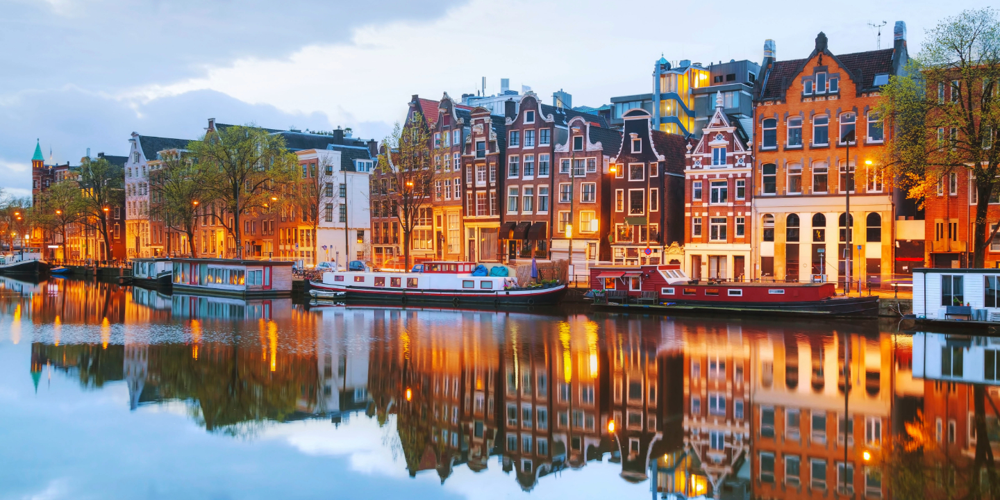
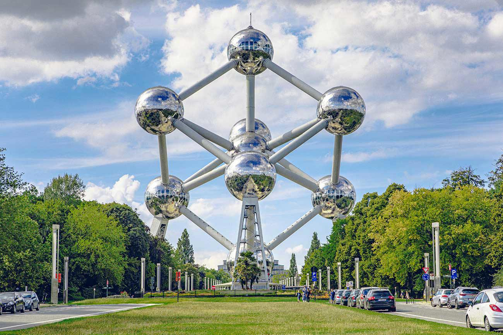
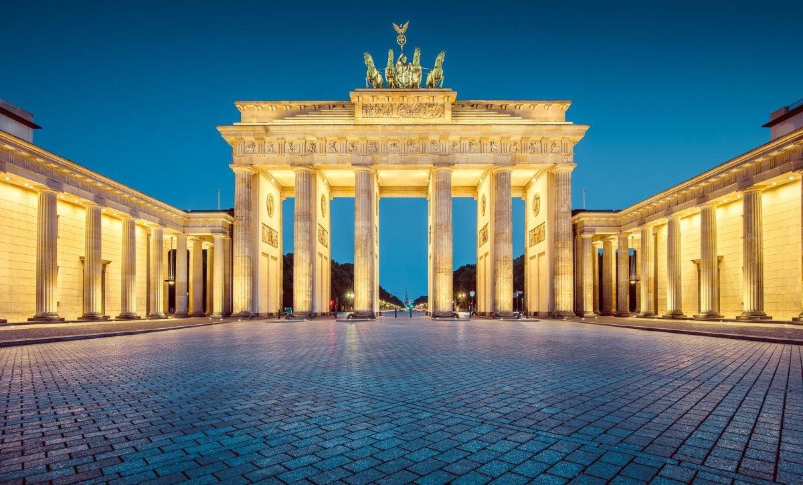
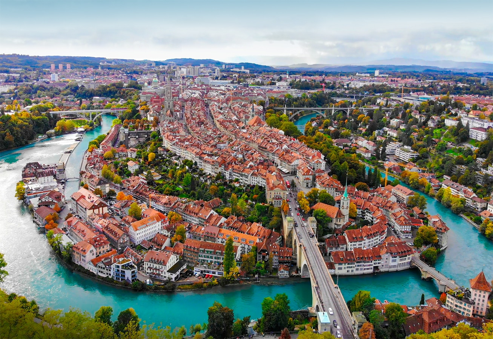
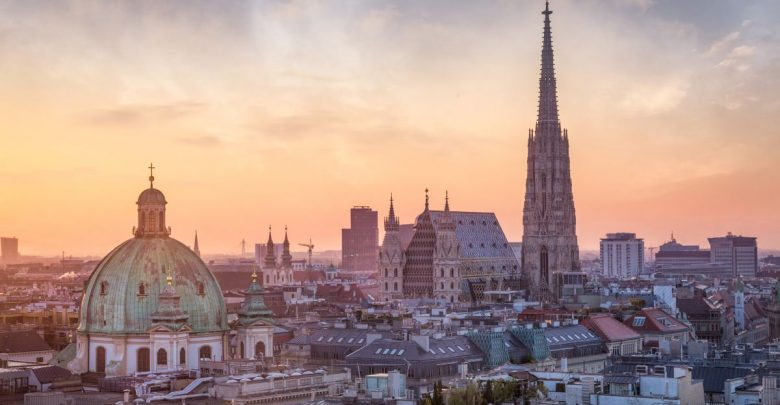

Západní Evropa
Francie
Hlavní město: Paříž. Francie je známá Eiffelovou věží, Louvrem, katedrálou Notre-Dame a malebnými vesnicemi v Provence. Paříž je kulturním centrem s muzei, kavárnami a historickými památkami. Francie nabízí i pobřeží Azurového pobřeží, vína a gastronomii světové úrovně.

Nizozemsko
Hlavní město: Amsterdam. Nizozemsko je známé kanály, větrnými mlýny a tulipány. Amsterdam nabízí historické centrum, Rijksmuseum a Van Gogh Museum. Země je ideální pro cykloturistiku, plavby po kanálech a poznávání kultury a tradic.
Belgie
Hlavní město: Brusel. Belgie nabízí historické centrum, Grand Place, Atomium a čokoládu světové kvality. Bruggy a Gent jsou malebná města s kanály, středověkou architekturou a kulturními akcemi.
Německo
Hlavní město: Berlín. Německo je známé historickými památkami, muzei, hrady a moderní architekturou. Berlín nabízí Braniborskou bránu, Reichstag a kulturní život. Bavorsko a Řezno lákají turisty na přírodu, tradiční festivaly a gastronomii.
Švýcarsko
Hlavní město: Bern. Švýcarsko je proslulé alpskými horami, jezerami a čistou přírodou. Zürich a Ženeva nabízejí muzea, historická centra a finanční centra. Země je ideální pro turistiku, zimní sporty a relaxaci v malebné krajině.
Rakousko
Hlavní město: Vídeň. Rakousko nabízí historická města, hudební tradice a Alpy. Vídeň je centrem kultury s paláci, kavárnami a operou. Salzburg je domovem Mozarta a malebné alpské vesnice lákají na turistiku a lyžování.
